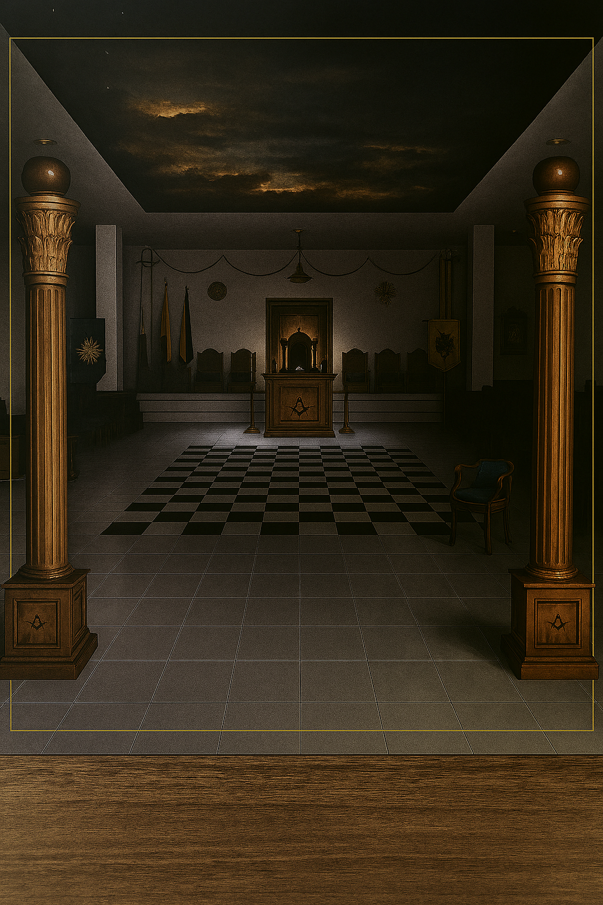
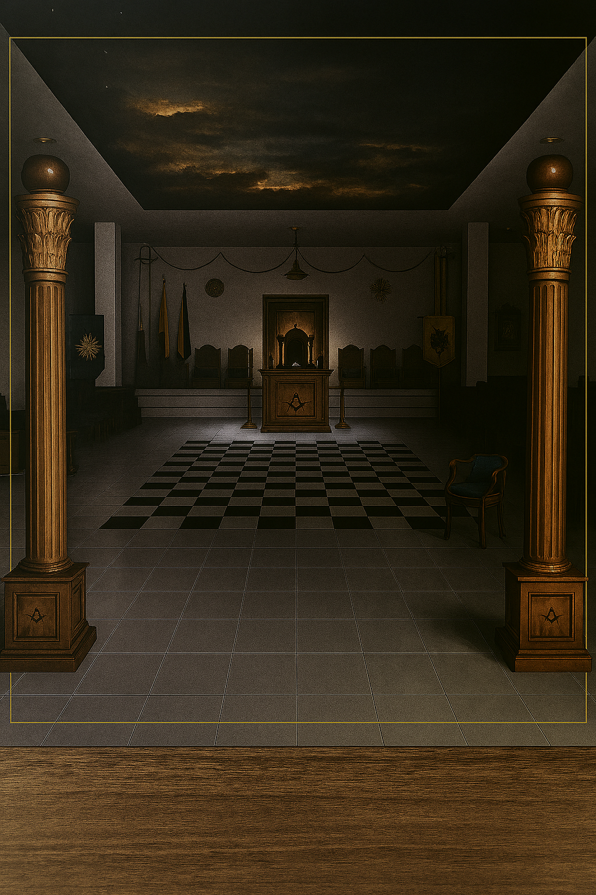

ORÍGENES
La masonería en Bucaramanga remonta sus orígenes a la primera Logia de la que se tiene noticia en la ciudad, siendo esta "Logia Santander número 57", la cualrecibió Carta Patente del Supremo Consejo Neogranadino del Grado 33 con sede en Cartagena de Indias en el año de1912, iniciando trabajos en enero de1913.
Esta Logia se mantuvo activa con Tenidas regulares hasta el año de 1919, posterior a lo cual, no se tiene documento alguno que refiera actividad, así como, tampoco disponemos de documentos que demuestren su abatimiento de Columnas.
Existe sí un reporte de tesorería fechado en 1930 y firmado por el tesorero de ésta, el Hermano Antonio Mantilla Escobar, en el cual se da cierre a sus actividades económicas reportando un balance de $0 pesos.
No entraremos en más detalles sobre la "Logia Santander No. 57", puesto que es el tema de otro artículo.